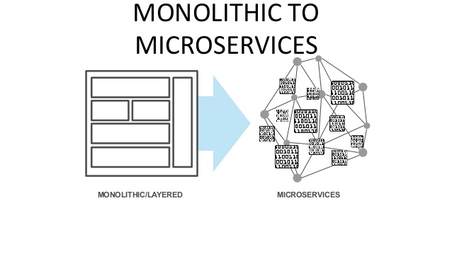
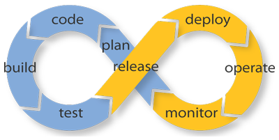

Innovando en el desarrollo de aplicaciones
DevOps
Ing. Adriel Paredes
Arquitecto Middleware
Red Hat Consulting
Email: aparedes@redhat.com
Arquitecto Middleware
Red Hat Consulting
Email: aparedes@redhat.com
Innovar
"Mudar o alterar algo, introduciendo novedades"
¿Qué es DevOps?
...Armemos nuestra propia definición...
- Desarrollo.
- Agilidad / iteraciones.
- Fallar rápido.
- Disponibilizar rápido.
- Operaciones.
- Microservicios
"Lo que realmente importa no se puede medir"
Microservicios
Agile
- Concepto más importantes.
- No se trata solo de una metodología, sino de una forma de vivir las cosas.
- Un equipo ágil ya no separa Desarrollo de Operaciones.
- Todo es parte de lo mismo, desde el momento que se escribe la primera línea hasta que se encuentra desplegado.
DevOps como una única área
Software con Calidad
Continuous Integration
Continuous Delivery
Continuous Deployment
Herramientas


www.redhat.com